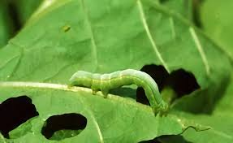
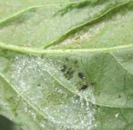
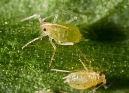
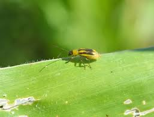

Daftar Hama yang Menyerang Tanaman Bayam

Ulat (Spodoptera spp.)
Gejala: Kerusakan pada daun, terutama lubang-lubang yang besar.
Penanganan:
- Pengendalian mekanis (mengumpulkan ulat secara manual).
- Menggunakan pestisida nabati seperti ekstrak daun mimba.
- Memperkenalkan musuh alami seperti parasitoid.

Kutu Daun (Aphids)
Gejala: Daun menjadi keriting, pertumbuhan terhambat, dan dapat menyebarkan virus.
Penanganan:
- Menggunakan insektisida nabati atau pestisida kimia sesuai dosis.
- Memperkenalkan predator alami seperti ladybug.

Tungau (Tetranychus spp.)
Gejala: Daun berwarna kuning dan muncul bintik-bintik kecil.
Penanganan:
- Menyemprotkan air untuk mengurangi populasi.
- Menggunakan pestisida yang efektif terhadap tungau.

Kumbang (Diabrotica spp.)
Gejala: Kerusakan pada daun dan batang.
Penanganan:
- Menggunakan perangkap atau insektisida.
- Mengelola sanitasi lahan dengan membersihkan sisa-sisa tanaman.